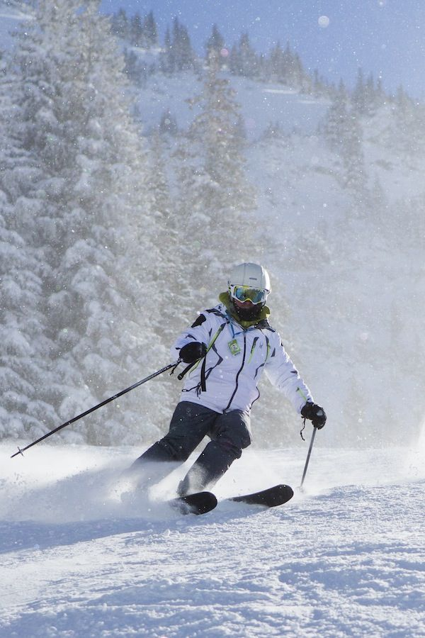
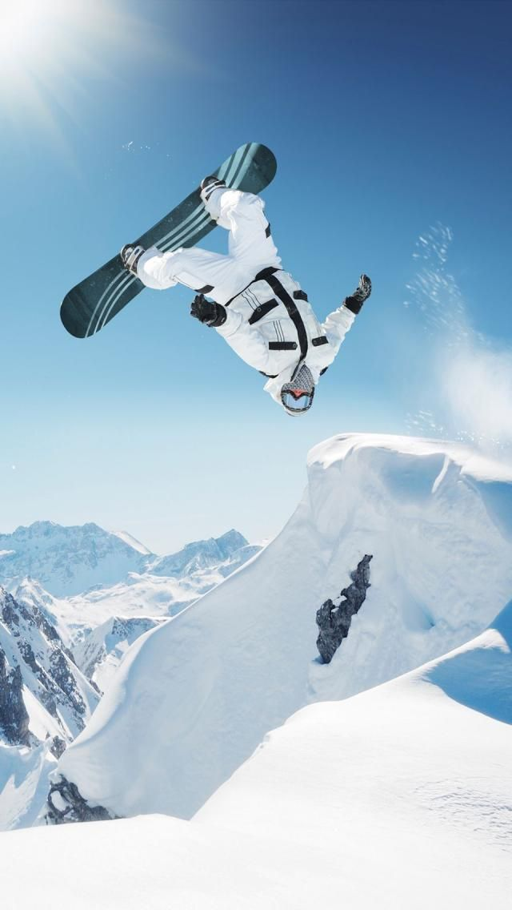
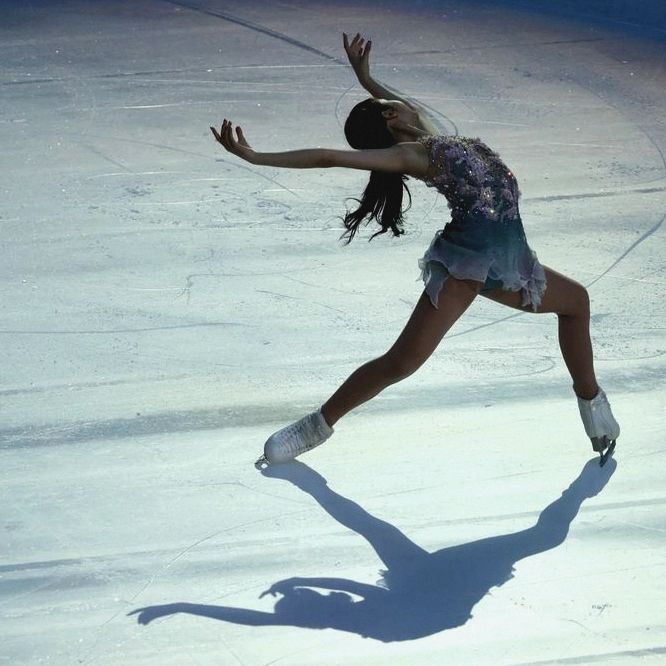

NEVE E GELO
Esportes
Conheça alguns dos esportes das Olimpíadas de Inverno.

Esqui
O esqui é deslizar na neve com esquis presos aos pés. Usa bastões para equilíbrio. Pode ser praticado em neve natural ou em pistas artificiais. Surgiu há mais de 8000 anos e evoluiu para esportes e lazer, com competições olímpicas. É necessário usar equipamentos de segurança e aprender com prática e atenção.

Snowboard
O snowboard é um esporte de inverno que consiste em deslizar sobre uma prancha na neve, com os pés presos a ela. Surgido nos Estados Unidos na década de 1960, o snowboard combina influências de skate e surfe, tornando-se muito popular. As modalidades incluem Estilo Livre, com manobras em descidas, e Corrida, onde vence o primeiro a cruzar a linha de chegada. É importante usar equipamentos apropriados para segurança.

Patinação
A patinação sobre rodas é uma atividade que usa patins para deslizar em diferentes superfícies. Originou-se no século XVIII e se tornou popular nos Estados Unidos entre as décadas de 1930 e 1950, e na década de 1970. Hoje, existem modalidades como patinação de velocidade, hóquei em patins, roller derby e patinação artística.
Hóquei no gelo
O hóquei no gelo começou no Canadá no século XIX, adaptando o hóquei de campo para o inverno. O jogo tem seis jogadores por time, é jogado em três períodos de 20 minutos e o objetivo é marcar gols. Os jogadores usam equipamentos de proteção, e o esporte é rápido e intenso, com o Canadá sendo o líder internacional. A Stanley Cup é o troféu mais importante.